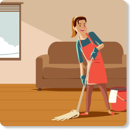

O que são os ODS?
Os Objetivos de Desenvolvimento Sustentável (ODS) são uma agenda mundial adotada durante a Cúpula das Nações Unidas sobre o Desenvolvimento Sustentável em setembro de 2015 composta por 17 objetivos e 169 metas a serem atingidos até 2030.
Nesta agenda estão previstas ações mundiais nas áreas de erradicação da pobreza, segurança alimentar, agricultura, saúde, educação, igualdade de gênero, redução das desigualdades, energia, água e saneamento, padrões sustentáveis de produção e de consumo, mudança do clima, cidades sustentáveis, proteção e uso sustentável dos oceanos e dos ecossistemas terrestres, crescimento econômico inclusivo, infraestrutura, industrialização, entre outros.
Igualdade de Gênero


A igualdade de gênero se refere à igualdade em direitos, responsabilidades e oportunidades das mulheres e dos homens, bem como das meninas e dos meninos. Ainda vivemos em uma sociedade muito desigual, inclusive em relação ao gênero, e enfrentar esse tipo de desigualdade é fundamental para a existência de uma sociedade sustentável e justa.
O ODS 5 diz respeito justamente à busca por “alcançar a igualdade de gênero e empoderar todas as mulheres e meninas”. Ou seja, tem como objetivo garantir o fim da discriminação contra mulheres e meninas no Brasil e no mundo até 2030. Dar à mulher direitos iguais aos recursos econômicos, como terra e propriedade, são metas vitais para a realização desse objetivo assim como garantir o acesso universal à saúde sexual e reprodutiva.
Por que a Igualdade de Gênero é tão importante?

Baseando-se nos dados da ONU, o sexo feminino representa a metade da população mundial, o que significa a metade do potencial humano mundial. Se conseguíssemos melhorar a qualidade de vida e uma igualdade de gênero real, teríamos vários benefícios que repercutiriam globalmente em toda a sociedade
Um trabalho decente, direitos básicos e uma série de regulamentações com base no salário provocaria uma melhoria na educação e na saúde, algo que no longo prazo teria reflexos positivos nas meninas e naqueles que dependem delas.
Metas para alcançar a Igualdade de Gênero
Em âmbito mundial, como sociedade, conseguimos uma série de avanços em relação à igualdade de gênero desde o começo do século, no entanto, ainda resta muito trabalho a fazer. Por isso, as metas para 2030 são:

Eliminar todas as formas de violência contra as mulheres e meninas, como o tráfico, a exploração sexual, o casamento infantil e a mutilação genital feminina.

Reconhecer e valorizar o trabalho doméstico não remunerado mediante serviços públicos, infraestruturas e políticas de proteção social.

Garantir a participação plena e efetiva das mulheres e a igualdade de oportunidades de liderança em todos os níveis de decisão na vida política, econômica e pública.

Aprovar e reforçar políticas e leis para promover a igualdade de gênero e o empoderamento de todas as mulheres e meninas em todos os níveis.